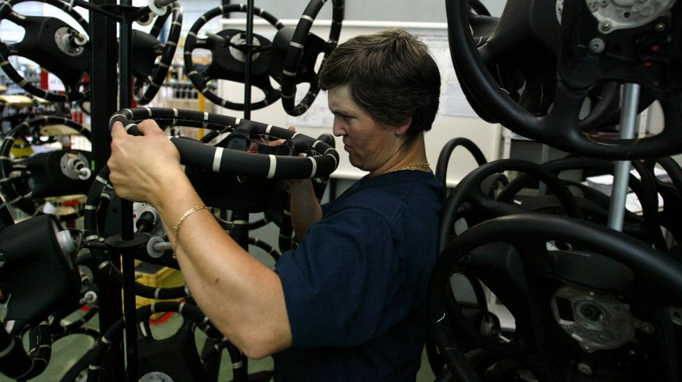
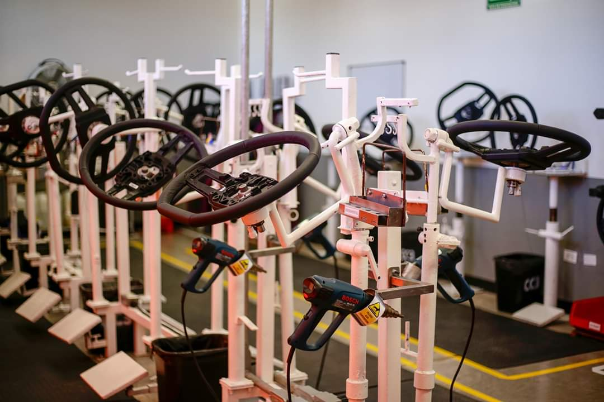

CONOCENOS
-Desde aca salen los mejores volantes de Latinoamerica
El piloto de autos de carrera italiano Gianpiero Moretti fundó SENNA en 1964 después de que encargó a un artesano local que produjera un volante personalizado para su propio auto de carreras. Este volante especial, el primer volante SENNA en la historia de la empresa, tenía un agarre superior en comparación con los volantes tradicionales de carreras de la época. Los pilotos de otros equipos notaron rápidamente el nuevo volante de Moretti y querían lo mismo para sus autos, y el volante de Moretti rápidamente ganó fama en la comunidad de carreras. El volante también llamó la atención del piloto de Fórmula Uno de Ferrari, John Surtees, que quería montarlo en su monoplaza. El Ferrari de John Surtees, equipado con el volante de carrera de Moretti, ganó el título mundial de Fórmula Uno en 1964. Gianpiero Moretti convirtió su pasión en una realidad de fabricación y nació SENNA.
-Contamos con empleados capacitados constantemente
Desde sus inicios, SENNA siempre se esforzó por ser líder en innovación de productos. Un ejemplo es el trabajo que realizó la empresa para crear el primer centro plegable para volantes de posventa. Se ha mantenido relevante a lo largo de las décadas al mantenerse cerca de las industrias del mercado de accesorios y de los deportes de motor y ofrecer productos que ayudan a sus clientes y corredores a desempeñarse. Esta empresa se ha ganado el respeto en todo el mundo porque nunca se aparta de sus valores simples pero sólidos: calidad del producto, artesanía superior, máxima seguridad y los más altos niveles de rendimiento
-Nuestros productos son testeados bajo rigurosas normas de calidad
SENNA VOLANTES fabrica sus productos con nobles materiales bajo rigurosas normas de control de calidad. Todos sus productos se encuentran debidamente registrados en los organismos pertinentes y continuamente testeados para alcanzar la mejor calidad de producto. Cuentan con su propia red de distribución con flota de vehículos habilitados y equipados con sistema de embalaje de seguridad para el traslado de la mercadería.?
-Nos encontramos en una de las mejores zonas de Buenos Aires
La Avenida Warnes en la Ciudad Autónoma de Buenos Aires sigue siendo el lugar de concentración de casas de repuestos y accesorios para automóviles mas popular del pais.